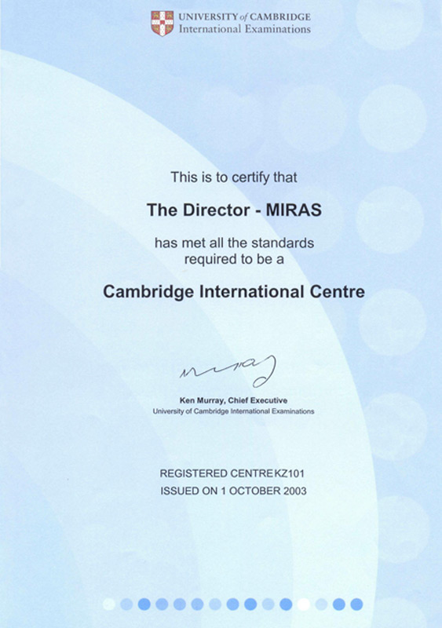
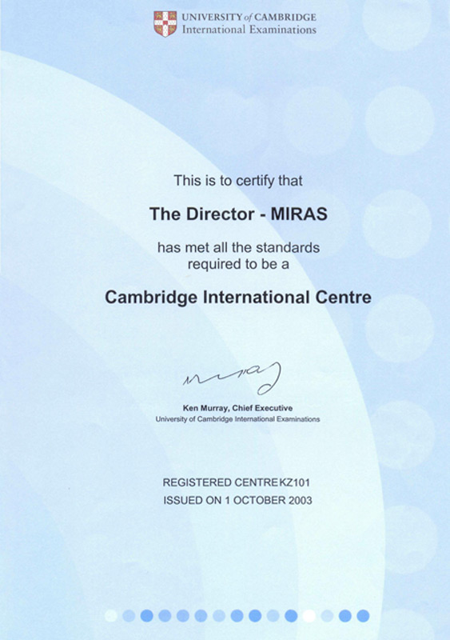

School structure consists of 3 levels of education:
- Primary school (2-11 years): Preschool, Kindergarten, Grades 1-5
- Secondary school (11-16years): Grades 6-10
- High school (16-18years): Grade 11 (Kazakhstan programme) or Grades 11-12 (the International Baccalaureate Diploma Programme)
- French School (3-18 years): Preschool - Grade 12
- Languages of instruction: English, Russian, French
Miras International School, Nur-Sultan:
- is authorized by the International Baccalaureate programmes for all the levels of education: (IB PYP, IB MYP, IB DP); the IB Diploma allows students to enter the world's leading universities;
- has received international accreditation by the Council of International Schools (CIS) and the New England Association of Schools and Colleges (NEASC) for compliance with international standards; Cambridge university as an IGCSE external examinations center;
- is a full member of the International Baccalaureate Organization (IBO), the Council of International Schools (CIS), the New England Association of Schools and Colleges (NEASC), the European Council of International Schools (ECIS), the Middle East IB Association of Schools (MEIBA), the IB Schools Association of the Commonwealth of Independent States, and is a UNESCO Associated School;
- includes the French School which is accredited by the Ministry of Education of France, whereby students after graduation, receive the Diplome National du Brevet and the Diplome de Baccalaureat fransais;
- has a multinational community of students, parents and teachers from many different countries around the world;
- provides a wide choice of after-school clubs and classes of supplementary education;
- offers up-to-date facilities and resources.
Miras International School remains the first and the only school in the capital city of Kazakhstan which is fully authorized in the three IB programmes (PYP since 2007, MYP since 2004 and DP since 2011), belongs to the UNESCO-associated school network since 2001 and accredited by the leading international education agencies (CIS and NEASC since 2004). The school is accredited by Cambridge University as an IGCSE exam center since 2001.
The school faculty has more than 50 professional staff representing of fifteen nationalities. Many of the overseas recruited staff have teaching experience in their home countries as well as in other international schools.
 
